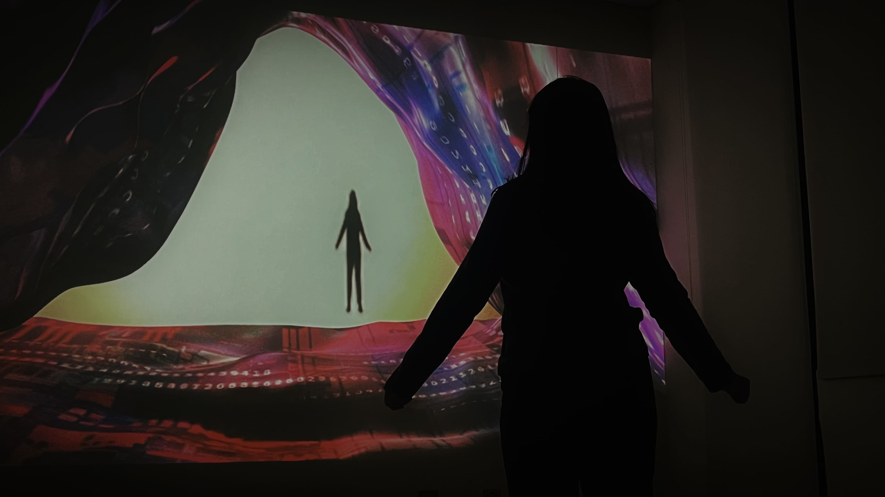

.- -.-. --.- ..- .. .-. .. -. --. .- -.-
互動投影
-.-- --- ..- .-. ... .. --. -. .-.- -.-.
當人們與世界進行互動已經不僅限於肉身，我們透過影子作為在不同時空世界的「數位分身」，擷取高度同步的特質在其中沈浸。像是柏拉圖的洞穴預言一樣，來自未來的光線滲透到洞口內，平行的白光折射出各種色彩，周圍色彩斑斕的光線，才讓我們意識到此刻所生活的世界只不過是一個由這些彩色所組成的洞穴，開始對未來的世界不斷猜想、臆測。人類的參與會推動當下更接近洞口，迎接被期待的未知。